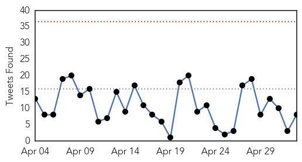
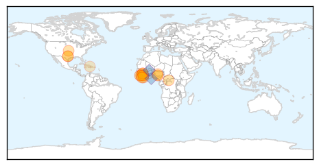
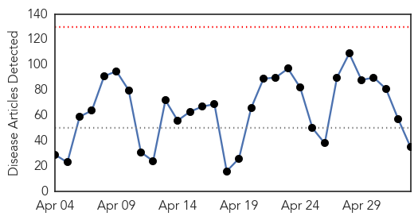
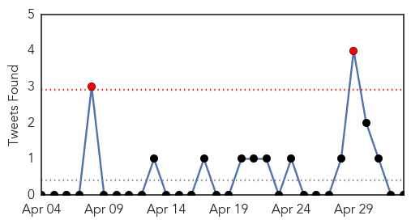
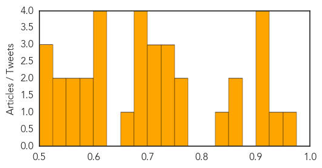

Ebola
30-Day Web Trend
0 alerts, 0 warnings

30-Day Twitter Trend
0 alerts, 0 warnings

Article Locations
Article Confidences

Top Articles:
- 0.999
- Mystery 'post-Ebola syndrome' emerges in West Africa
- 0.999
- Ebola case hints sex unsafe indefinitely
- 0.999
- Senegal Confirms Country's First Ebola Case
- 0.999
- Ebola Survivors Should Use Condoms Indefinitely, CDC Says
- 0.998
- 5 months after infection, man spreads Ebola via sex
- 0.998
- Man spreads Ebola via sex 5 months after infection
- 0.997
- Five Months Following Infection Ebola Can Spread Through Sex
- 0.985
- 'I dare not start crying at the moment, because I don’t know when I will be able to stop'
- 0.970
- Health-care workers face threats around world
- 0.918
- Review: ‘Frontline’ Looks at Missteps During the Ebola Outbreak
- 0.917
- Fiancee of Ebola victim hopes memoir closes chapter
- 0.889
- Outgoing Minister Thanks Health Care Workers
- 0.829
- Nigeria ends 9th month without a case of Wild Polio Virus, Minister lauds health workers
- 0.721
- Sierra Leone university holds ceremony amid Ebola fears
- 0.698
- Doctors: Nepal's Health System at Breaking Point -- LONDON, May 3, 2015 /PR Newswire UK/ --
- 0.683
- Minister Tasks Workers on Teamwork
- 0.609
- Vaccination in Africa: Angola, Mozambique biggest gainers; Zambia and Kenya see 'mysterious' decline
- 0.589
- IS MEDECINS SANS FRONTIERES SUPERSEDING THE UN’S HUMANITARIAN AGENCIES?
- 0.557
- S/Leone university in first graduation since Ebola
Top Tweets:
- 0.925
- Review: 'Frontline' Looks at Missteps During the Ebola Outbreak - New York Times http://t.co/8KZT49lVWV ebola EVD
- 0.909
- Solar-powered vaccine fridges help Ebola fight - BBC News http://t.co/rAush0uLuW ebola EVD
- 0.858
- What Happens To A Country When An Outbreak Of Ebola Ends? - NPR (blog) http://t.co/9hI8zEchfo ebola EVD
- 0.840
- RT: For the week ending today SierraLeone recorded 7 new confirmed Ebola cases and 7 deaths. The lowest since The outbreak a…
- 0.815
- Report: 5 months after infection, man spreads Ebola via sex - KABC-TV http://t.co/kxNPMVD9ID ebola EVD
- 0.792
- Sierra Leone university holds ceremony amid Ebola fears - http://t.co/k2gpoQ2NbQ http://t.co/iv9xrP8cKS ebola EVD
- 0.729
- Guinea reported 22 confirmed Ebola cases in the week to 26 April, compared with 19 cases the previous week. EbolaResponse
- 0.699
- RT: Guinea reported 22 confirmed Ebola cases in the week to 26 April, compared with 19 cases the previous week. EbolaResponse
- 0.692
- According to, the total number of confirmed & probable Ebola cases is similar in males & females. EbolaResponse http://t.co/PY3NpkzLTy
- 0.507
- On 9 May, 42 days will have elapsed since burial of last Ebola case in Liberia. Vigilance is being maintained throughout. EbolaResponse
Unknown
30-Day Web Trend
0 alerts, 0 warnings

30-Day Twitter Trend
1 alerts, 0 warnings

Article Locations

Article Confidences
Top Articles:
- 0.954
- WHO Nepal Earthquake Health Update - Situation Report No. 5: 30 April 2015 - Nepal
- 0.947
- Alarming Chlamydia outbreak reported in Texas High Schools
- 0.921
- Cambodia: 212 H.I.V. Cases Linked to Contamination
- 0.920
- Dog flu outbreak worries pet owners
- 0.917
- Chicago Tribune
- 0.917
- Chicago Tribune
- 0.861
- Apple y la ciencia, por Alberto Corbi
- 0.852
- Warning to dog owners as concern grows about spread of ‘Alabama Rot’
- 0.825
- Bird Flu Virus Raises Questions Scientists Working To Answer
- 0.752
- E.coli outbreak in Whatcom County’s Milk Makers Fest left people sick
- 0.751
- WHO setting up Gorkha field office to extend health-care reach in Nepal - Nepal
- 0.747
- First Report of a New Crop Virus in North America
- 0.743
- Turkish town put under quarantine after bird flu outbreak
- 0.731
- Nepal faces risk of epidemics
- 0.717
- Polio cases expected : Over 300 cases of acute flaccid paralysis being tested
- 0.707
- Nepal Earthquake: Doctors offer to do complex surgeries in India; IMA ready to bear all expenses
- 0.701
- Colorado plague traced to pitbull
- 0.685
- Togo’s incumbent Gnassingbe confirmed winner of presidential vote
- 0.685
- Arms sales becoming France’s new El Dorado, but at what cost?
- 0.685
- Student nurses’ allowances to stay
- 0.679
- First Report of a New Crop Virus in North America… “My fear is that this virus is in corn and wheat, and we are not even aware of it”
- 0.666
- Nepal: opening first field hub, UN health agency expands support to areas cut off by quake
- 0.623
- Chlamydia STD Infection On the Rise At Texas High School
- 0.621
- Russian ballet icon Maya Plisetskaya dies aged 89
- 0.619
- Imprisoned Syrian journalist Mazen Darwish wins UNESCO press freedom award
- 0.619
- Kerry visits Kenya after years of strained ties
- 0.587
- Chlamydia Outbreak In Texas High School Sees 20 Confirmed Cases; Health Officials To Talk Sex Education
- 0.586
- Thousands of migrants rescued off Italian coast amid smuggler surge
- 0.574
- Baltimore’s mayor lifts city-wide curfew imposed after rioting
- 0.564
- Harsh economic conditions force people out
- 0.543
- Israel warns of terror threat against Jews in Tunisia
- 0.539
- More than 7,000 dead in Nepal quake
- 0.514
- Mobile clinics, psychological support for Nepal quake victims
- 0.504
- Nepal rules out finding survivors as quake toll rises
- 0.500
- Seek early treatment for Leukemia
Top Tweets:
-
No tweets found for May 03, 2015